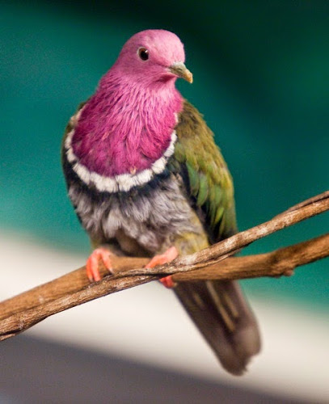

The Pink-headed Fruit Dove (Ptilinopus porphyreus), also known as pink-necked fruit dove or Temminck”s fruit pigeon, is a small colorful dove. The species is a resident breeding endemic bird in Indonesia, where it occurs in the mountain forests. It measures 29 cm. long. The male has stunning pink head, neck, throat and upper breast. On the chest, the pink plumage is bordered by white and black bands. The airports are warm green and the underparts gray. It has a greenish bill and pink legs. The female is duller than the male, with a weaker breast band.
 Check more